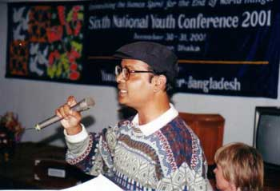

|
|
|
|||
|
|
||||
|
|
How dare the recalcitrant mullahs offer their fatwa against three very bright professors of DU?
Things are for sure out of kilter in Bangladesh. Or else, how dare a bunch of obscure kathmullahs, muftis, and “practitioners of Islam” offer their fatwa against three very bright professors of Dhaka University? It is an insult to every sensible citizens of this impoverished nation of 140 million. The good sense has taken the back seat, undoubtedly.
The Internet was abuzz on June 29, 2004, when a barrage of e-mails crisscrossed the globe to reach many of us while bringing the ominous news. Many a newspaper in Bangladesh printed the news of the sensational fatwa in the front page to emphasize the gravity of the situation.
One leading English news daily from Dhaka blurted out, “Islamist zealots have issued death sentence to three noted professors of Dhaka University (DU) accusing them of running anti-Islamic propaganda in the country.”
The three senior professors against whom the fatwa of death was announced are: Prof Muntasir Mamun of history department, Prof Humayun Azad of Bangla department and Prof MM Akash of economics department.

I personally met Prof. M.M. Akash during 1998-99 when he visited the University of New Orleans. Once I told him about the danger that is lurking ahead due to rife Islamization of Bangladesh. Professor Akash was least perturbed by all this baneful development. He reasoned as follows, “The Jamaat hardly gets any vote; people don’t trust them.” I was adamant as I told him, “You wait and see what is in store for Bangladesh.” After receiving this pernicious fatwa Professor Akash will have his second thought, I recon.
A confederacy of Islamic dunces comprising of Maulana Zakaria, Maulana Ekaedullah, Maulana Keramat Ali, Maulana Abdul Jabbar, Mufti Saleh Ahmed and Maulana Mufti Kudrat-e-Elahi gave the fatwa in a meeting that supposedly took place in DU’s Arts Building at 10:00 am on June 26, 2004. A day later, a group claiming to be comprised of The Nastik Murtaad Resistance Committee and Muslim Millat Sha’riah Council started sending faxed message to various newspapers publicizing the fatwa. They wrote, “If the three professors don't redeem themselves by September this year, they will be killed.”
All people should take this death threat very seriously. The government should have reacted instantaneously by condemning the fatwa against the three professors. But three days have passed by and we are yet to see any reaction from the government. What does this mean? It has not escaped anyone’s attention that whatever the Islamists in Bangladesh do, the government remains reticent for quite a while. When the donor nations break the silence and ask the government some tough question about the wrongdoings of the Islamists, only then they break their silence but even then the reaction is all but a whimper.
In March and April 2004, in western districts of Bangladesh a man by the moniker “Bangla Bhai” and his group of Islamists unleashed a rein of terror while killing dozens of people. The government did not react at all while newspapers published color photographs of this “revolutionary” fundamentalist renegade along with some short interviews. The police were sidelined through order from Dhaka as “Bangla Bhai” and his cohorts rampaged the western districts. Now there is no trace of this man. He disappeared into the thin air a la Houdini’s vanishing act! As a team of American investigators went to the western district to gather information about “Bangla Bhai,” they were told that no such person had ever existed in that locality. The villagers are now manning the area looking for communists. The Americans won’t mind the villagers’ activity because in this post Cold War days, the Bangalees are still fighting the communists to maintain the Pax Americana.
Under these circumstances, nothing good could be expected from the four-party coalition government because of undue influence of Islamists over the Khaleda Zia Administration. Therefore, the civil society should come into the defense of the three “condemned” professors. At stake here is the civil rights of the professors. Lest we forget, Bangladesh’s constitution gives personal freedom to the citizens to practice their own religion. If anyone wants to extol the virtue of secularism, then why should that bother the mullahs and muftis? In what way our majority religion is in danger. The mullahs and their cohorts have invoked a fourteen hundred year old dictum that tells the faithfuls how to take care of the dissidents. These practitioners of religion have all but forgotten that we live in the dawn of a new millennium. For haven’s sake Bangladesh is not an Islamic country; at least not at this very moment. If the obscurantists want to offer fatwa, they had better change the constitution of Bangladesh.
I strictly recall that in January 2001, two Supreme Court justices in Bangladesh have given their verdict that there is no place for fatwa in this nation. Simply put; fatwa is beyond the realm of law. Immediately, some zealots offer fatwa to declare the two respected judges to be murtaad or apostates. The government of Bangladesh then headed by Sheikh Hasina just sat quietly without bringing the fatwa-givers to justice. In other words, the government does think that these are pranks. Likewise, the Khaleda Zia Administration will also do nothing against the mullahs and muftis who offered their fatwa against the three professors.
My fervent request to the government is the following: please arrest these bunch of mullahs; let the law of the land work unhindered. These mullahs have violated the civil rights of three professors’ and they should have to pay for their infraction of law. Bangladesh is still governed by a set of civil laws that are not in conflict with the constitution of the nation.
As I see it, the mullahs in question are in violation of the law. They should be apprehended right away; and the law should run its course with due diligence. ---------------------------------- Dr. A.H. Jaffor Ullah, a researcher and scientist, writes from New Orleans, USA
Also Read: Three DU Teachers threatened by Ajoy Roy |
|
||
|
|
|
|||